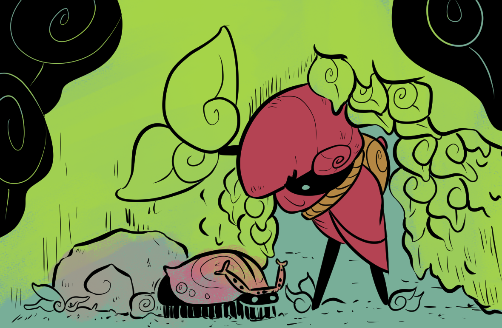

Grup was developed over multiple weeks, with multiple revisions. Below depicts our progress throughout this quarter.
We started with a brainstorm session and a Trello Kanban board. The next step was setting up our source control repo on Github. After that, we started brainstorming. We came up with ideas that we wanted to explore and test in Unity to see the feasiblity of being able to complete the work in the time allotted for the quarter.
We attempted to do an Agile sprint style design, but honestly, it just devolved into getting our assigned work done and picking up whatever we needed to in order to ensure we met deadlines and had a polished product. In that case we were extremely lucky in having a very balanced team. We have someone who has spent a lot of time working with Unity, artists, an experienced coder, and someone who would keep us on track; the team balance was excellent for short-term project.
maybe references - might include art & source code??